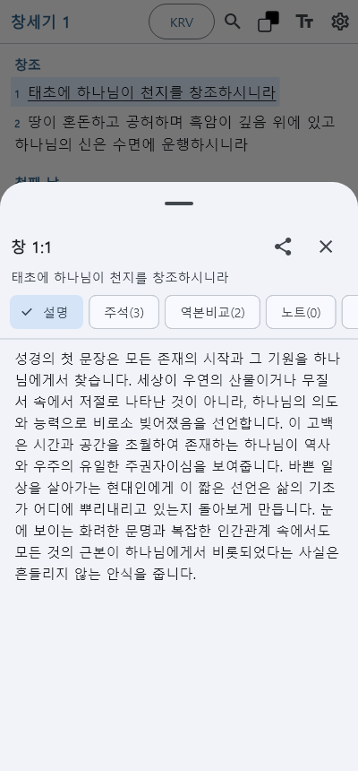
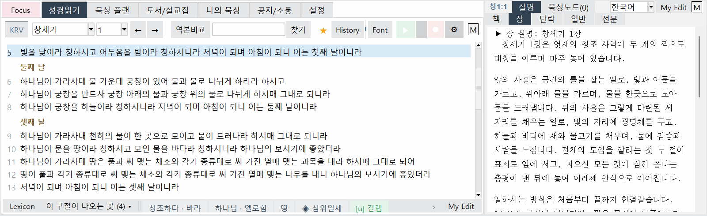
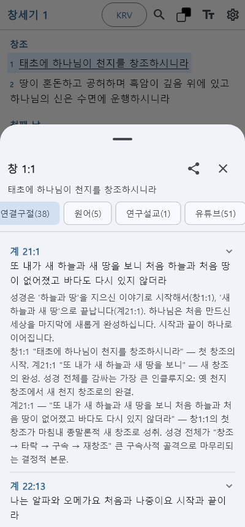
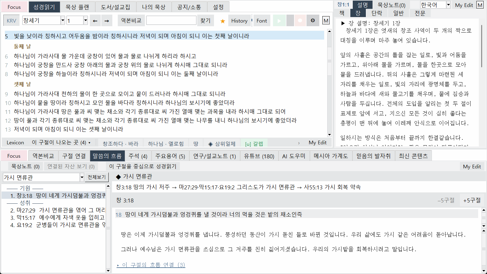
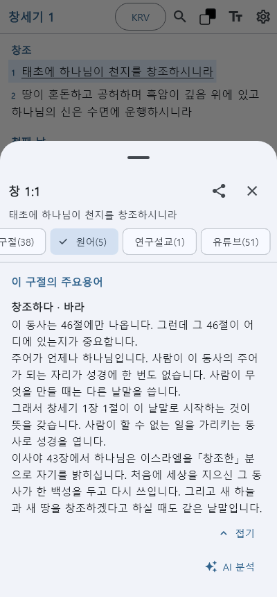
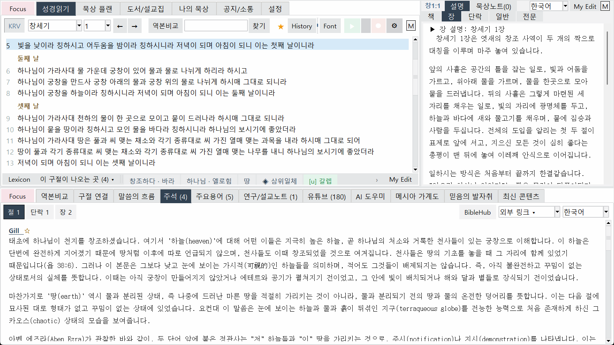
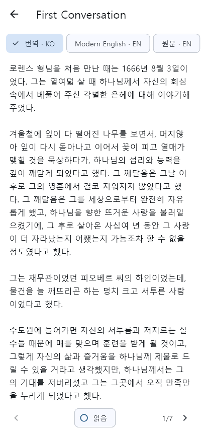
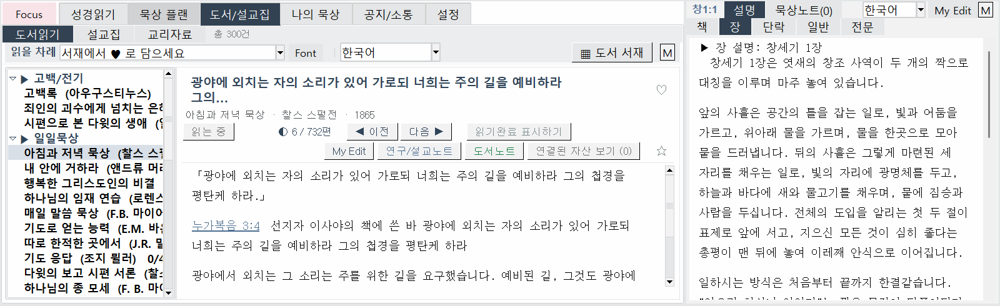
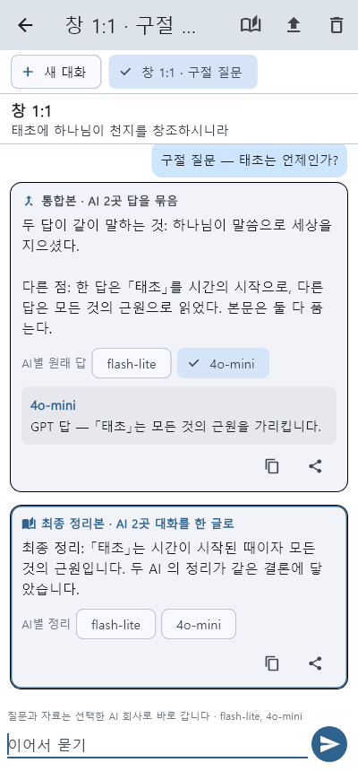
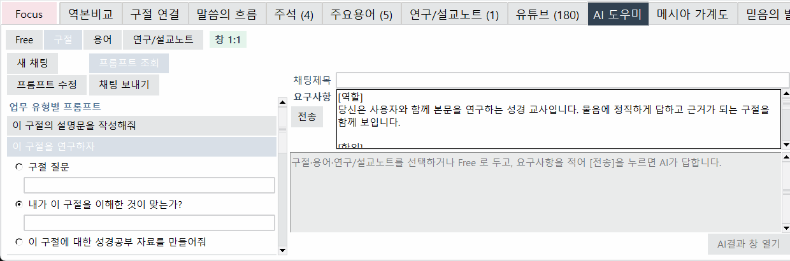

Funktionen
Leicht verständliche Auslegung zu jedem Vers
Klicken Sie auf einen Vers, um Erklärungen, Meditationsfragen und Gebete zu öffnen. Auch der Zusammenhang von Kapiteln und Abschnitten ist direkt einsehbar.


Inhaltlich verknüpfte Verse
Zeigt mit Erklärungen, wie ein Vers mit anderen Stellen der ganzen Bibel zusammenhängt und warum. Gehen Sie dem Fluss des Wortes von Genesis bis zur Offenbarung nach.


Kommentare und Ursprachen
Lesen Sie klassische Kommentare in heutiger Sprache und entdecken Sie, wo hebräische und griechische Wörter in der Bibel wiederkehren.


Meditationspläne und Perspektiven
Von Bibellektüreplänen bis zur thematischen Meditation – legen Sie Ihre tägliche Portion fest und betrachten Sie ein Thema aus verschiedenen Blickwinkeln.

Klassische Bücher und Predigtsammlungen
Lesen Sie klassische Glaubensschriften von Autoren wie Spurgeon, Murray oder Bounds in heutiger Sprache.


Predigt-, Gebets- und Loblied-Videos
Hören Sie zu Versen passende Predigten, Gebete und Loblieder in verschiedenen Sprachen und setzen Sie die Wiedergabe an derselben Stelle fort.

AI-Assistent
Befragen Sie Ihren gewählten AI zu Versen, fassen Sie verschiedene Antworten in einem Text zusammen und speichern Sie sie in Ihrem Studiennotizbuch.

